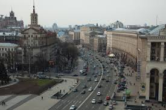
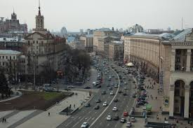

Архітектура та Вулиці
----------------------------------------------------------------------------------------------------------будуть завантажуватись з БД-
Київські вулиці
Автор: Олександр Золотий, Рік: 2022

Колекція стріт-фото та урбаністичних пейзажів.
Автор: Олександр Золотий, Рік: 2022
